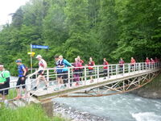
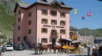
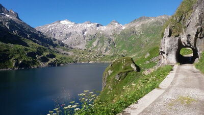
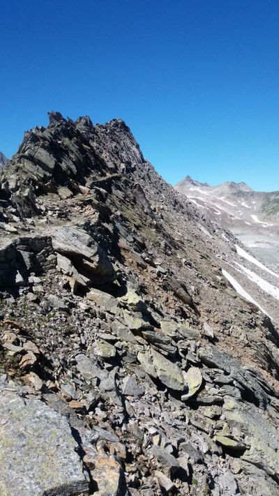
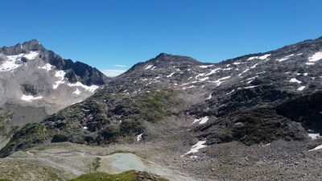
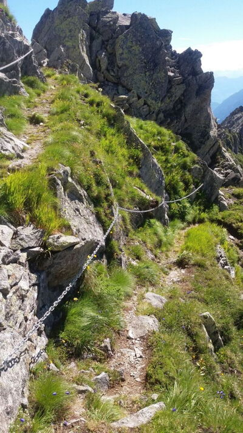
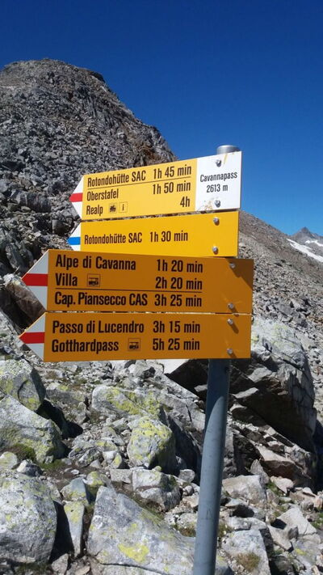
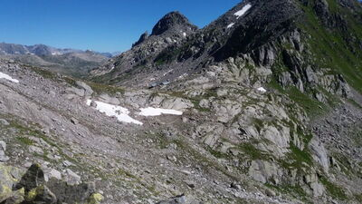

Erlebnistage Quellenlauf
Vier-Quellenweg im Gotthardmassiv

Dieser führt original vom Oberalppass zum Rheinquelle, weiter über den Gotthardpass zur Quelle der Reus, auf den Nufenenpass zur Quelle des Ticino bis zum Rhonegletscher als Quelle der Rhone.
Wir wollen am 03. und 04. September 2016 zwei dieser vier Quellen ablaufen, mit der Absicht, im nächsten Jahr auch noch die anderen zwei Quellen zu besuchen.
Samstag 03. September 2016: Treffpunkt ca. 10.00Uhr Oberalppass. (Ankünfte Bahn ab Chur 09.51 ab Andermatt 09.46Uhr)
Strecke: Oberalppass-Rheinquelle-Maighelspass-Vermigelhütte-Giübin-Gotthardpass 24km +/- 1550m
Übernachtung im Albergo S Gottardo, DZ mit Halbpension
Sonntag.04.September 2016: Start ca. 09.00 Uhr.
Strecke: Gotthardpass-Lago di Lucendro-Passo di Lucendro (Quelle der Reus)-Passo di Cavanna-Rotondohütte-Witenwasserntal-Realp 26.4km +1392/-1945m
Rückfahrt: 15.05 ab Realp, 15.46 Oberalp, 18.01 Chur oder eine Stunde später
Bericht von Thomas
3. und 4. September 2016, Alpinrunner Ausflug zum Gotthard 46.2km +2600m / -3100m
Als Ersatz für den ursprünglichen Erlebnislauf wollten wir einen 2-tägigen Themenlauf organisieren. Der 2012 eröffnete 4 – Quellenweg rund um den Gotthard hat sich hier dazu angeboten.2 der 4 Quellen sollen es an diesem Wochenende sein.
Wir treffen uns am Samstag 03.September um 10 Uhr auf dem Oberalppass. Nach einer kurzen Begrüssung und dem Verladen des Gepäcks laufen wir bei bestem Wetter los in Richtung Tomasee. Der Tomasee mit der Rheinquelle ist vom Oberalppass leicht erreichbar und dementsprechend sind auf diesem Teil der Strecke recht viel Wanderer unterwegs. Ein paar Fotos als Erinnerung und dann geht’s, hinunter zum Lai Urlaun unterhalb der Maighelshütte. Weiter geht’s südwärts das Val Maighelsl hinauf und dann rechts weg zum Maighelspass auf 2421m. Der bildet dann auch die Grenze zum Kanton Uri. Vorbei an einem schönen aber namenlosen See geht’s wieder bergab in Richtung Vermigelhütte im Urner Unteralptal. Nach einer gemeinsamen Pause bei Suppe, Most, Cola usw. laufen wir wieder los. Ein schöner Aufstieg, zuerst über Alpweiden und dann etwas steiniger hinauf zum Sellapass auf 2701m. Die meisten machen noch den Abstecher zum Giübin auf 2776m. Ein wunderschöner Rundblick und schon stehen wir im Kanton Tessin. Jetzt geht’s fast nur noch bergab, ein schöner Trail bis zur Staumauer des Lago della Sella. Der letzte Teil ist dann noch mehrheitlich eine Fahrstrasse bis zum Gotthardpass, wo ein feiner Zvieri auf uns wartet. Das Gepäck ist auch schon hier und so beziehen wir die reservierten Zimmer im Albergo San Gottardo. Nach einem feinen Nachtessen gehen die Einen früher und ein paar wenige etwas später ins Bett.
Am Sonntag, 4. September treffen wir uns bereits um 07Uhr zum Frühstück und verladen anschliessend das Gepäck. Die Sonne scheint bereits wieder und nach einem Gruppenfoto laufen wir bei angenehmer Lauftemperatur los über die originale Strecke des 4-Quellelwegs, zuerst die alte Passtrasse entlang nach Norden und dann links weg zur Staumauer des Lago di Lucendro. Ein kurzer Aufstieg und schon geht’s südwärts dem Stausee entlang und dann hinauf in Richtung Passo di Lucendro auf 2529m. Kurz vor der Passhöhe erreichen wir die Quelle der Reus, markiert mit einem Stein. Hier verlassen wir den 4-Quellenweg und laufen über eine blauweiss markierte Querverbindung, hoch über dem Bedrettotal mit Blick zum Nufenenpass, westwärts. Zuerst ein steiler Durchstieg und dann wird es richtig steinig. Der Aufstieg zum Passo di Cavanna auf 2613m und weiter über den Ronggergrat, mit 2725m der höchste Punkt des Tages, ist Steine hüpfen angesagt. Hier haben wir wider den Kanton Uri erreicht und über den Hühnersattel geht’s wieder bergab, fast weglos und etwas zeitraubend. Dann ein letzter Aufstieg von 200 Höhenmetern zur Rotondohütte, wo wir zu einer Pause einkehren. Jetzt noch der Schlussabstieg, zuerst ein schöner Trail und dann ein Fahrweg, eine Abkürzung und wieder ein Fahrweg bis nach Realp. Hier erwartet uns wieder ein leckeres Zvieri, das wir schön geniessen können, weil wir zeitlich recht früh dran sind. Mit Petrus Hilfe war das ein gelungenes Wochenende. Vielleicht gibt es nächstes Jahr die Fortsetzung zu den Quellen des Ticino und der Rhone?
Leistungen

Unterkunft: Albergo San Gottardo, Doppelzimmer mit Nachtessen und Frühstück.
Gepäcktransport: Samstag vom Oberalppass zum Gotthardpass / Sonntag nach Realp
Zwischenverpflegung: Imbiss bei Ankunft am Gotthardpass und bei Ankunft in Realp, es gibt keine Verpflegungsposten unterwegs.
Betreuung: Wir laufen in zwei oder drei Gruppen mit Laufleiter nach Stärkeklassen.
zum Programm
Quellenlauf2016.pdfTeilnehmer mit Team Alpinrunner
| Zimmer | Name | Name |
| 1 | Jäger Marco | Jäger Petra |
| 2 | Tscharner Thomas | Wirz Ruedi |
| 3 | Conrad Röbi | Conrad Maria |
| 4 | Baer Ursula | Pang Micheline |
| 5 | Günthardt Bruno | Gisler Michi |
| 6 | Friedrich Toni |
Locatos Maria |
| 7 | Furrer Joschi | Kottmann Nartano |
| 8 | Barbara Schuler | Gisler Rösli |
| 9 | Lüönd Martin | Lüönd Jsabella |
| 10 | Hernach Chrigel | Hernach Bea |
| 11 | Erne Jürg | Erne Karin |
| 12 | Bernet Chantal | Hunkeler Karin |
| 13 | Jäger Silvan "Gepäck" | Arpagaus Silvio |
-

-

-

-

-

-
